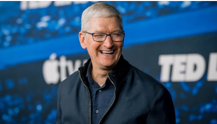
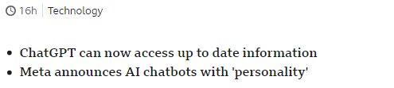
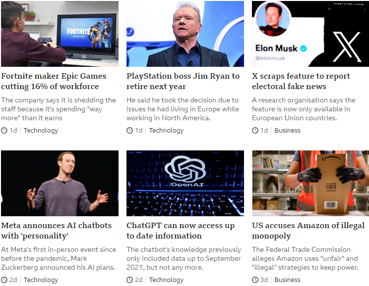
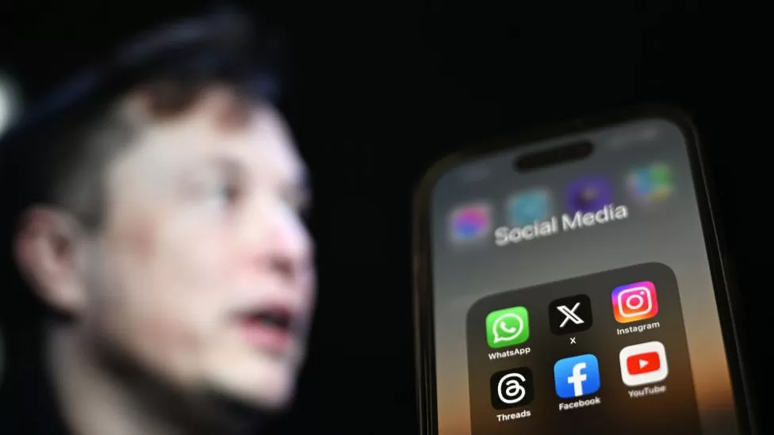
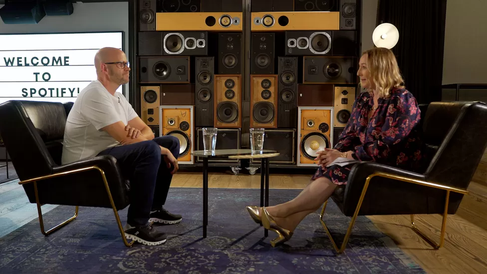
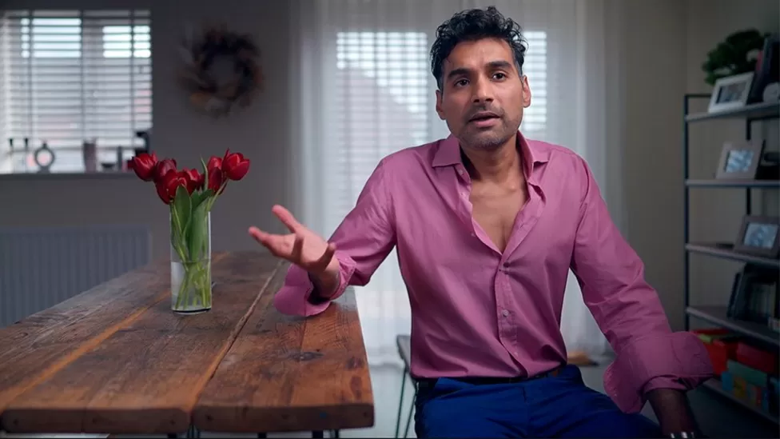
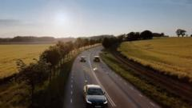

Sign in
Home
News
Sport
Reel
Worklife
Travel
Future
Culture
NEWS
Home
War in Ukraine
Climate
Video
World
Asia
UK
Business
Tech
Science
Entertainment & Arts
Health
World News TV
In Pictures
More
Tech

Apple to buck layoff trend by hiring UK AI staff
The tech giant's chief executive, Tim Cook, said he expects to increase investment.


Disinformation most active on X, EU says
Technology
Spotify will not ban AI-made music, says boss
Technology
Reddit to begin paying people for popular posts
Technology
"The King od Crypto lost me £1.7m'
Technology
Amazon invests billions in AI taking on Microsoft
Technology
Watch/Listen
Inside Cern’s 'antimatter factory' creating antihydrogen
 Sweden’s innovative solution to powering electric cars
Bryan Johnson: Meet the multi-millionaire trying to reverse ageing
How to spot fake reviews online
Twitter: Sign change paused as police arrive at San Francisco HQ

 Sign in
Sign in
Sign in
Sign in


 Twitter: Sign change paused as police arrive at San Francisco HQ
Twitter: Sign change paused as police arrive at San Francisco HQ